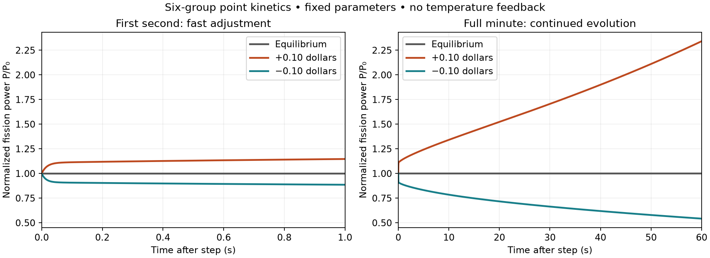
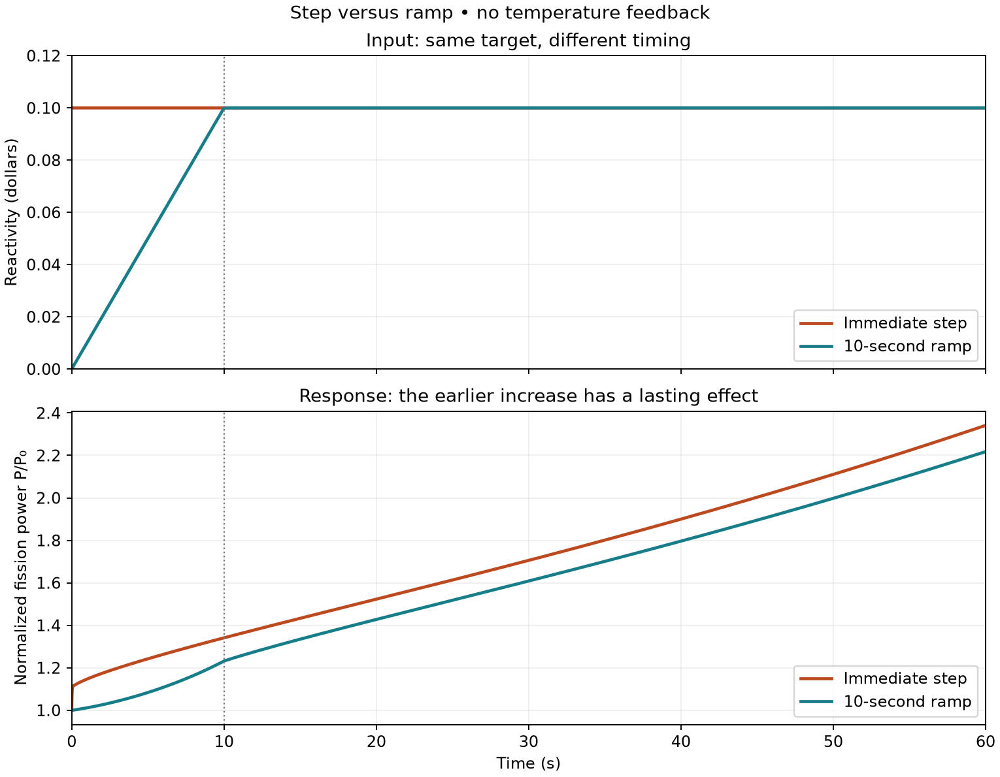
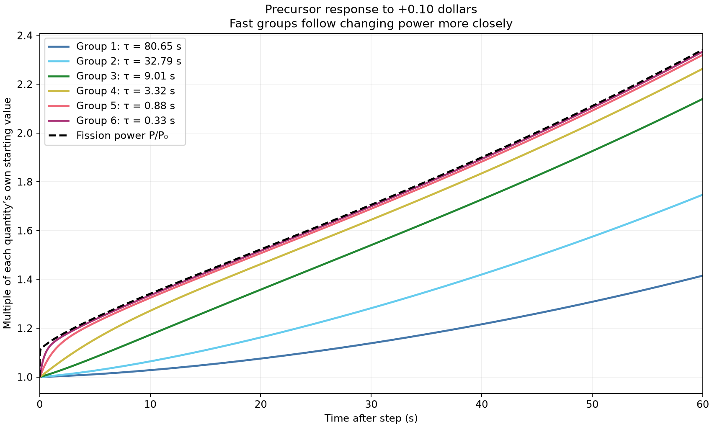
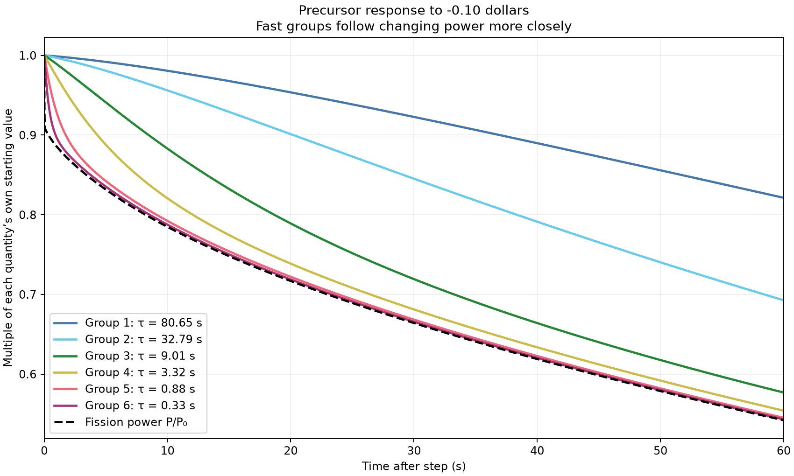
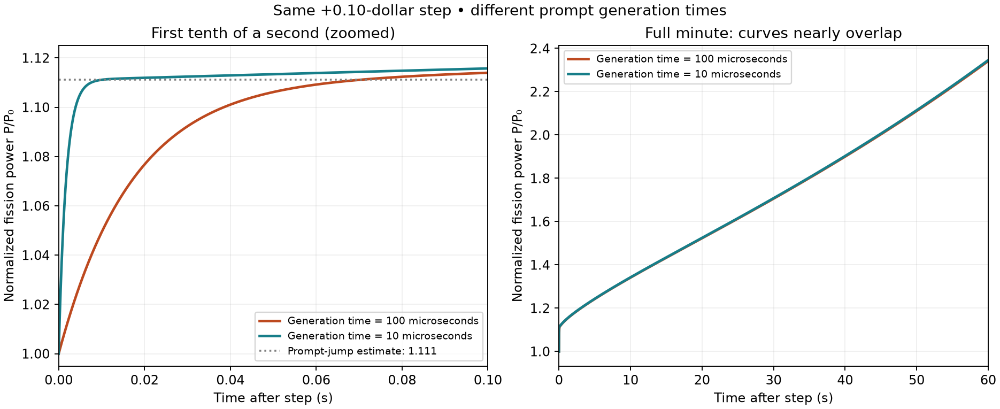

How does fission power respond when reactivity changes? A seven-state Python model follows the rapid neutron adjustment and the slower influence of six delayed-neutron precursor groups.
Normalized fission power at 60 s
Reactivity history
P/P₀
+0.10 $ step
2.341293
+0.10 $ · 10 s ramp
2.217767
−0.10 $ step
0.542138
Python / SciPy results · Λ = 100 µs · P/P₀ = 1 initially. One dollar means ρ = β; it is a reactivity unit, not a power percentage.
Scope and limitations. Educational, single-point model with fixed coefficients: no thermal feedback, spatial distribution, or decay heat. No reactor-specific calibration or experimental validation. Not a plant safety tool. The output represents normalized fission power, not electricity or total heat.
Neutron amplitude n is proportional to fission power under the fixed-shape assumption. Precursors store the influence of earlier fissions and later release neutrons.
Start from critical equilibrium: n(0) = 1 and Cᵢ(0) = βᵢ/(Λλᵢ). Reactivity is prescribed; it does not respond to temperature or power.
Numerical verification
SciPy solve_ivp with the implicit Radau method handles the widely separated neutron and precursor timescales.
Critical equilibrium stays constant.
Signed steps agree with a separately assembled matrix-exponential solution.
Selected step and ramp cases agree after tolerance refinement.
The post-ramp segment and shorter generation-time case pass matrix checks.
Baseline rtol = 10⁻⁸, atol = 10⁻¹⁰. These checks establish numerical consistency for tested cases, not physical validation.
Parameters & source provenance
Thermal U-235 group data used as illustrative effective fractions
Group
βᵢ
λᵢ (s⁻¹)
1/λᵢ (s)
1
0.000215
0.0124
80.65
2
0.001424
0.0305
32.79
3
0.001274
0.111
9.01
4
0.002568
0.301
3.32
5
0.000748
1.14
0.88
6
0.000273
3.01
0.33
β = 0.006502, retaining the sum of the rounded entries. Λ = 10⁻⁴ s baseline; 10⁻⁵ s sensitivity case. Reactor-specific neutron importance weighting is not calculated.
Doubling the insertion does not double power at 60 seconds. Positive reactivity held constant keeps power growing in this model, because there is no feedback to bring the imbalance back to zero.
Positive steps · normalized fission power P/P₀
Time (s)
+0.10 $
+0.20 $
0
1.000000
1.000000
10
1.341112
1.933656
30
1.705738
3.519822
60
2.341293
8.030966

01 / Baseline equilibrium and signed steps. The fast initial adjustment is followed by slower precursor-dependent evolution.
Prompt-jump estimates β/(β − ρ) are 1.111111 and 1.250000. At 0.10 s, numerical values are 1.113976 and 1.256221 (0.258% and 0.498% higher). This is an early-time approximation check, not a plateau prediction or a uniform error bound.
Step and ramp comparison
The immediate step provides more reactivity before 10 seconds. When the ramp catches up, the neutron and precursor populations still carry different histories.
+0.10 $ target · normalized fission power P/P₀
Time (s)
Step
10 s ramp
10
1.341112
1.231656
30
1.705738
1.608566
60
2.341293
2.217767

02 / The input curves coincide after 10 s; the power curves do not. The ramp prescribes reactivity, without modeling physical rod motion.
Delayed-neutron precursor response
A smaller decay constant means a longer characteristic time, τ = 1/λ. Existing precursors continue releasing neutrons after a negative step; increasing absorption does not erase them.
At 60 s · each precursor divided by its own initial population
Quantity
+0.10 $ step
−0.10 $ step
Fission power P/P₀
2.341293
0.542138
Group 1 · C₁/C₁(0)
1.415224
0.821307
Group 2
1.747055
0.692715
Group 3
2.139783
0.576900
Group 4
2.263429
0.554126
Group 5
2.320266
0.545236
Group 6
2.333288
0.543306

03 / Positive insertion. Fast groups follow increasing production more closely.

04 / Negative insertion. Slow groups retain the influence of prior steady operation.
Curve heights compare proportional changes, not absolute populations or neutron-source contributions. To compare delayed-neutron contributions, use λᵢCᵢ.
Prompt generation time sensitivity
Reducing Λ tenfold speeds the initial adjustment. At 60 s, power changes by only about 0.18% for this small positive step.
+0.10 $ step · normalized fission power P/P₀
Time (s)
Λ = 100 µs
Λ = 10 µs
0.01
1.049243
1.111122
0.10
1.113976
1.115733
60
2.341293
2.345570

05 / Each case starts from its own equilibrium precursor populations. The left panel zooms both time and power; its vertical scale differs from the right panel.
Interactive simulation
Change the input and follow normalized fission power over one minute. This separate JavaScript calculation uses the same equations; it does not replace the verified Python results above.
Normalized fission power
Loading parameters…
—P/P₀ at 60 s
Starts at critical equilibrium. Reactivity changes at t = 0. Dashed line: initial power. The chart rescales vertically for each scenario. An implicit second-order solver resolves the fast initial transient; see the README for its comparison checks and limits.
Source and reproduction
Full report & source
The report documents the equations, parameter choices, verification evidence, figures, and limitations.